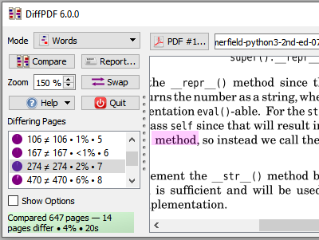
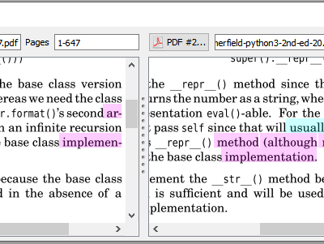
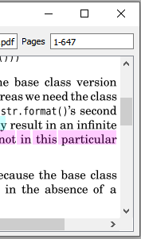
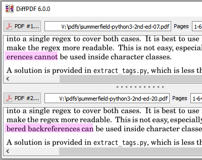
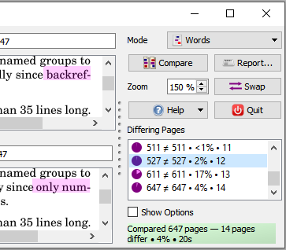
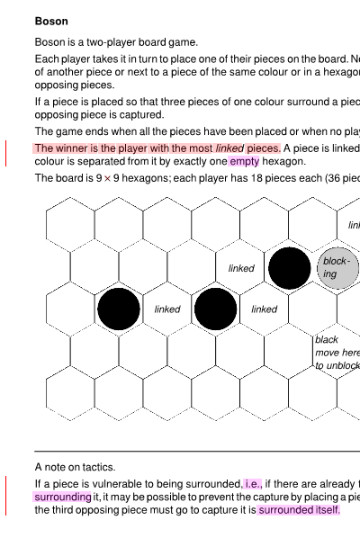
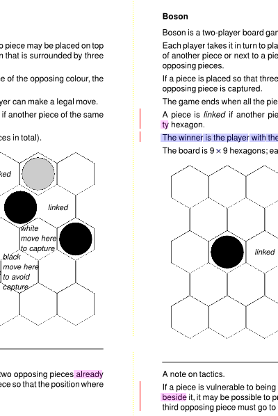
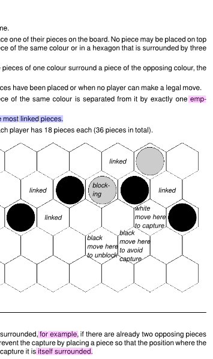

This software is no longer for sale (except by special
arrangement until 31-May-2025—contact support@qtrac.eu).
DiffPDF v6.2.0-pe is provided with a comprehensive manual (690KB). There is also the Perpetual Edition License (36KB).
Use DiffPDF to compare PDF files quickly and easily:
Click to choose one PDF; click to choose another PDF; click Compare.
The changes are shown as if you'd used highlighter pens to show
added, changed, or deleted text.
This Windows application is our easiest to use and most affordable and popular product. Some customers report it as superior in functionality and far faster than Adobe Acrobat's Diff tool.Your PDFs are safely compared on your own computer without the size or page limits of online tools.
Comparisons can be made based on the text regardless of layout, or based on appearance (which accounts for fonts, colors, layout, diagrams, images, etc.)
DiffPDF is useful for anyone who needs to compare PDFs, reports, books, or labels—for example, archivists, engineers, journalists, linguists, packagers, publishers, researchers, software testers, and translators. DiffPDF is used in a wide range of contexts, from book authors to banks, insurance companies, and Government. (Screenshots.)
If you require a console-based command line tool, use comparepdfcmd.
The first screenshot shows how easy DiffPDF is to use: choose the two PDFs to compare, then click the Compare button. (Top)

By default DiffPDF highlights deleted text in red, inserted text in cyan, and replaced text in magenta. All the colors can be customized, or plain highlighting can be chosen. The change bar color, thickness, and indent can also be customized—or the change bar can be hidden entirely. (Top)

In this screenshot we see that the control panel can be switched to the right, and the view panels can be set to be vertical—useful for PDFs that are much wider than they are tall. (All four possible layout options are supported.)
What the screenshots don't show is that DiffPDF can produce reports—either a PDF that matches what's seen on the screen, or textual reports. Nor do the screenshots reveal all the options that are available. For example, it is possible to exclude corners and/or margins and/or arbitrary rectangles from consideration when comparing, which is ideal for excluding timestamps. It is also possible to compare ranges of pages to account for inserted and deleted pages. All DiffPDF's functionality is explained in the manual, and, of course, you can try it before buying it.
Here is an example comparison that shows how DiffPDF indicates differences between two PDFs whose pages are slightly different:

By default, change bars are shown in red, and changes are highlighted with deletions in red, insertions in cyan, and replacements in magenta. In this example, the red and cyan highlighting indicates text that has moved (i.e., been deleted from one place and inserted in another). And the magenta highlighting indicates text that has been replaced in its original position. (Note that if plain rather than change highlighting is used—which is the default—all differences are shown in yellow.) All colors can be changed, as can the width of the change bar and many other things.
The image above shows what appears on-screen in DiffPDF's user interface. DiffPDF can also output PDF reports which contain each pair of differing pages with the differences highlighted as shown above.
Your Privacy • Copyright © 2006 Mark Summerfield. All Rights Reserved.